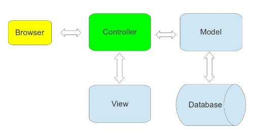

Web-разработка на node.js и express
Изучаем node.js на практике
Содержание
Вступление
-
Глава 1. Старт
-
Глава 2. Статические страницы
Глава 3. Модель пользователя
Вступление
Приветствую, перед вами небольшой учебник по практической разработке на node.js, с использованием фреймворка express. Я с большим энтузиазмом отношусь к node и сопутствующим технологиям. Node.js в первую очередь привлекает свежестью в подходах к разработке, смелостью и драйвом.
О том, что такое node.js вы можете прочитать на http://nodejs.org/, если коротко - то это серверная платформа, для выполнения javascript. Так же мы будем использовать express, web-фреймворк построеный на концепции middleware (о том, что это такое, поговорим поподробнее чуть позже)
В процессе изучения мы познакомимся с различными аспектами web-разработки, такими как использование системы контроля версий, автоматическое тестирование и так далее. В результате по ходу изучения мы разработаем вполне рабочее web-приложение (простенький аналог твиттера)
Хочется отметить, что очень большое влияние на меня оказал railstutorial, это лучшее пособие по web-разработке, которое я встречал, и мне очень хотелось бы создать нечто подобное для node.js.
Глава 1. Старт
В этой главе мы развернем рабочее окружение с нуля, установим все необходимые инструменты, создадим простенькое приложение и даже запустим его на облачном хостинге.
1.1 Рабочее окружение
Так как я в основном использую в работе linux, а если точнее - Ubuntu 12.04, основная часть инструкций по установке тех или иных инструментов будет ориентирована на ползователей линукс, но я буду стараться по возможности давать ссылки на инструкции и для других ОС.
Для того чтобы точно следовать инструкциям в учебнике, вам нужно будет поставить систему контроля версий git, дело в том, что мы не только будем размещать код своих проектов в git, но и устанавливать многие инструменты из репозиториев на гитхабе.
Так что, первое что мы сделаем - это...
1.1.1 Установка git
Пользователи apt-based дистрибутивов могут выполнить в терминале:
$ sudo apt-get install git-core
Остальные отправляются читать инструкции по адресу http://git-scm.com/book/ch1-4.html
1.1.2 Установка node.js и npm
Теперь пришло время поставить последнюю стабильню версию node.js (на текущий момент это 0.8.1) и npm (установщик пакетов для node).
Инструкции по установке разных ОС можно найти здесь
Для установки на ubuntu выполняем:
$ sudo apt-get install python-software-properties
$ sudo add-apt-repository ppa:chris-lea/node.js
$ sudo apt-get update
$ sudo apt-get install nodejs npm
Если есть желание - можно запустить консоль node и поиграться с интерпретатором javascript.
1.1.3 Среда разработки
Тут каждый волен выбирать по своему вкусу, лично меня вполне устраивает gedit с установленным набором плагинов gmate. Вполне подходят Netbeans или Webstorm.
1.1.4 Express и первое приложение
Теперь пришло время познакомиться с фреймворком express. Фреймворк очень простой, и вполне приемлемо документированный. Единственный неудобный момент - это то, что мы будем использовать бета версию 3.0.x а документация на официальном сайте написана для 2.x, так что советую иметь под рукой migration guide
Устанавливаем express глобально:
$ sudo npm install -g express
Создаем директорию для наших учебных проектов:
$ mkdir -p ~/projects/node-tutorial
$ cd ~/projects/node-tutorial
Создаем проект и устанавливаем зависимости:
$ express first-app
$ cd first-app && npm install
Желающие могут покопаться в том что нам сгенерировал генератор приложений, думаю, что люди знакомые с javascript могут предположить что там происходит.
Теперь приложение можно запустить:
$ node app
И увидеть результат работы http://localhost:3000/
1.2 Система контроля версий
Теперь, когда у нас уже есть рабочее приложение, более подробно коснемся работы с сисемой контроля версий. Для того чтобы лучше познакомиться с работой git, стоит почитать книжку Pro Git, но можно и обойтись инструкциями в данном учебнике.
1.2.1 Настройка git
Для более комфортной работы с git стоит сначала указать свои личные данные:
$ git config --global user.name "Your Name"
$ git config --global user.email your.email@example.com
И настроить алиасы для наиболее часто используемых комманд:
$ git config --global alias.co checkout
$ git config --global alias.ci commit
1.2.2 Работа с git
Git настроен и можно размещать наше приложение в репозитории, инициализируем новый репозиторий:
$ git init
Добавляем директорию с зависимостями приложения в gitignore:
$ echo 'node_modules' > .gitignore
Помещаем все файлы в индекс и создаем первый коммит:
$ git add .
$ git ci -m "Initial commit"
1.2.3 github
После размещения кода проекта в репозитории пришло время выложить проект на GitHub. GitHub - это социальная сеть и хостинг для проектов. Огромное число opensource проектов хостится на гитхабе, так что если вы там еще не зарегистрированы - самое время сделать это.
Перед тем как работать с GitHub нужно будет создать RSA ключи для доступа по ssh. Процедура описана тут. Для пользователей linux привожу инструкцию по созданию ключей если их у вас еще нет.
$ ssh-keygen -t rsa -C "your_email@youremail.com"
Отвечаем на вопросы генератора, после чего копируем содержимое файла ~/.ssh/id_rsa.pub:
$ sudo apt-get install xclip
$ xclip -sel clip < ~/.ssh/id_rsa.pub
После этого нужно пройти по ссылке Account Settings, зайти в раздел SSH Keys и нажать кнопку Add SSH Key и вставить ключ из буфера обмена в поле Key. Затем сохранить.
Проверить что ключ работает можно так:
$ ssh -T git@github.com
Возможно вы увидете предупреждение:
The authenticity of host 'github.com (207.97.227.239)' can't be established.
# RSA key fingerprint is 16:27:ac:a5:76:28:2d:36:63:1b:56:4d:eb:df:a6:48.
# Are you sure you want to continue connecting (yes/no)?
Нужно просто ответить 'yes' и тогда, если ключ успешно добавился, вы увидите ответ сервера:
Hi username! You've successfully authenticated, but GitHub does not
# provide shell access.
Когда ключи настроены создаем новый репозиторий с названием first-app и дефолтными настройками, после чего выкладываем код на гитхаб:
$ git remote add origin git@github.com:ваш_ник_на_гитхабе/first-app.git
$ git push -u origin master
1.3 Разворачиваем приложение
Теперь наступает самый волнующий этап, мы будем разворачивать приложение на хостинге. Для этого воспользуемся услугами облачной системы деплоя Heroku. Если вам интересно как работает хостинг Heroku, советую поизучать их раздел How it Works
1.3.1 Настройка Heroku
Для начала нам надо зарегистрироваться и установить необходимый инструментарий.
Пользователи ubuntu выполняют:
$ wget -qO- https://toolbelt.heroku.com/install-ubuntu.sh | sh
Когда установка завершится, нужно будет залогиниться из коммандной строки:
$ heroku login
1.3.2 Размещаем приложение на heroku
Теперь наше окружение полностью готов к выкладке на хостинг. Размещение node.js проекта на Heroku требует еще нескольких действий, вы можете почитать об этом в документации или просто выполнить инструкции.
В файле package.json нашего проекта, нужно указать версии ноды и npm, package.json должен выглядеть так:
{
"name": "application-name",
"version": "0.0.1",
"private": true,
"scripts": {
"start": "node app"
},
"dependencies": {
"express": "3.0.0beta4",
"jade": "*"
},
"engines": {
"node": "0.8.x",
"npm": "1.1.x"
}
}
Теперь в корне проекта создаем файл Procfile:
$ echo 'web: node app.js' > Procfile
Проверяем что все запускается с помощью менеджера процессов:
$ foreman start
Приложение должно быть доступно на http://localhost:5000/
Добавляем файлы в репозиторий:
$ git add .
$ git ci -m "Added Procfile and engines"
$ git push
Создаем приложение на heroku:
$ heroku create
$ heroku keys:add ~/.ssh/id_rsa.pub
$ git push heroku master
Набираем:
$ heroku open
и любуемся задеплоеным приложением.
Глава 2. Статические страницы
В этой главе мы приступим к разработке нашего приложения, которое мы будем использовать в качестве примера на протяжении всего учебника, и начнем с самого простого, а именно со статических страниц.
2.1 Model-View-Controller (MVC)
Перед тем как приступать собственно к разработке приложения, полезно поговорить о том, что из себя представляет типичная архитектура web-приложения на наиболее высоком уровне абстракции. Самым популярным архитектурным паттерном на сегодняшний день является model-view-controller (MVC), общий смысл паттерна заключается в том, чтобы разделить бизнес логику приложения (её привязывают к моделям) и представление - view. Кроме того, модели реализуют интерфейс к базе данных. Контроллер играет роль посредника между моделью и представлением. В случае web-приложения - это выглядит так: браузер пользователя отправляет запрос на сервер, контроллер обрабатывает запрос, получает необходимые данные из модели и отправляет их во view. View получает данные из контроллера и превращает их в красивую HTML страничку, которую контроллер в итоге отправит пользователю.

2.2 Демонстрационное приложение
Пришло время приступить к разработке нашего демонстрационного приложения. В первой главе мы уже развернули тестовое приложение, но воспользовались при этом генератором express и не написали ни строчки кода. Теперь мы будем писать наше приложение сами и начнем с "Hello, World".
$ cd ~/projects/node-tutorial
$ mkdir node-demo-app
$ cd node-sample-app
2.2.1 package.json
Для того чтобы воспользоваться всеми прелестями, которые нам может предоставить npm (зачем, что это такое и ссылка), мы создадим в корневой лиректории нашего проекта файлик package.json:
{
"name": "node-demo-app"
, "version": "0.0.1"
, "scripts": {
"start": "node server.js"
}
, "dependencies": {
"express": "3.0.1"
}
}
TODO: Описание полей и ссылка на доки по package.json
Теперь можно выполнить
$ npm install
В результате npm создаст директорию node_modules в которую поместит все модули от которых зависит наш проект.
2.2.2 Hello, World!
Основной файл назовем server.js:
var express = require('express')
, app = express()
, port = process.env.PORT || 3000
app.get('/', function (req, res) {
res.send('Hello, World!')
})
app.listen(port, function () {
console.log('Listening on port ', port)
})
Для того, чтобы полюбоваться результатом нашего труда, есть два способа:
$ node server.js
либо
$ npm start
Второй способ доступен потому что мы добавили соответствующую строчку в файл конфигурации package.json.
Теперь по адресу http://localhost:3000/ можно получить строчку 'Hello, World!'.
Настало время залить что-нибудь в GitHub. Создаем новый репозиторий и выполняем в директории проекта следующий набор комманд, сперва создадим файл README.md (правило хорошего тона)
$ echo '# Node.js demo app' > README.md
Создадим файл .gitignore для того чтобы не коммитить лишние файлы в git, а именно директорию node_modules:
$ echo 'node_modules' > .gitignore
Создаем репозиторий, коммитимся и заливаем все на GitHub
$ git init
$ git add .
$ git commit -m 'Hello, World'
$ git remote add origin git@github.com:<username>/node-demo-app.git
$ git push -u origin master
2.2.3 Структура приложения
Express пока не диктует строгой структуры для файлов приложения, так что мы придумаем свою. Предлагаю такой вариант:
/node-demo-app
|- /controllers - директория с контроллерами
|- /models - модели приложения
|- /public - статика - картинки, клиентские скрипты, стили и т.д.
|- /tests - автоматические тесты
|- /views - html темплейты
|- app.js - основной файл приложения
|- config.js - файл с настройками приложения
|- server.js - http сервер
Думаю, что для начала этого хватит.
2.3 Тестирование приложения
О том что такое TDD и зачем нужно писать тесты вы наверняка уже слышали, а если нет, то можете прочитать об этом здесь .... В этом учебнике, для тестирования приложения мы воспользуемся подходом который называется BDD (behavior-driven development). В тестах мы будем описывать предполагаемое поведение приложения. Сами тесты разделим на две категории: integration тесты - они будут имитировать поведение пользователя и тестировать систему целиком, и unit тесты - для тестирования отдельных модулей приложения. В качестве фреймворков мы будем использовать библиотеки Mocha (читается как мокка, кофе-мокка :)), should.js, и supertest. Mocha служит для организации описаний тест-кейсов, should.js предоставляет синтаксис для осуществления различных проверок, а supertest - это надстройка над простеньким http-клиентом, которая позволяет проверять результаты http-запросов. Для подключения библиотек сделаем необходимые изменения в package.json
{
"name": "node-demo-app"
, "version": "0.0.1"
, "scripts": {
"start": "node server.js"
}
, "dependencies": {
"express": "3.0.1"
}
, "devDependencies": {
"mocha": "1.7.0"
, "should": "1.2.1"
, "supertest": "0.4.0"
}
}
Зависимости мы разместили в разделе "devDependencies", так как нет никакой необходимости тащить эти библиотеки на продакшн сервер. Для установки библиотек выполняем
$ npm install
Для того что бы понять как это работает, попробуем создать свой первый тест и прогнать его через наш фреймворк
$ mkdir tests
$ touch tests/test.js
В test.js положим такой тест
describe('Truth', function () {
it('should be true', function () {
true.should.be.true
})
it('should not be false', function () {
true.should.not.be.false
})
})
и запустим его
$ ./node_modules/.bin/mocha --require should --reporter spec tests
Вполне естественно, что такой тест пройдет, так что заменим его на что-то неработающее
describe('foo variable', function () {
it('should equal bar', function () {
foo.should.equal('bar')
})
})
запускаем
$ ./node_modules/.bin/mocha --require should --reporter spec tests
и видим, что тесты не прошли, придется чинить код, добавляем объявление переменной
var foo = 'bar'
describe('foo variable', function () {
it('should equal bar', function () {
foo.should.equal('bar')
})
})
запускаем
$ ./node_modules/.bin/mocha --require should --reporter spec tests
и видим что код рабочий.
Основной принцип TDD состоит в том, чтобы напсать тесты до того как написан код, таким образом мы можем убедиться в том, что тесты действительно что-то тестируют, а не просто запускают код на выполнение и делают проверки в стиле true.should.be.true. То есть процесс разработки выглядит следующим образом:
- Пишем тест
- Выполняем тест и убеждаемся в том что он падает
- Пишем код
- Выполняем тест и убеждаемся в том что он проходит, если нет, возвращаемся в п.3
И так много раз.
Чтобы упростить запуск тестов добавим таск прогоняющий тесты в Makefile
$ touch Makefile
Содержимое Makefile:
REPORTER=spec
TESTS=$(shell find ./tests -type f -name "*.js")
test:
@./node_modules/.bin/mocha \
--require should \
--reporter $(REPORTER) \
$(TESTS)
.PHONY: test
Обращаю внимание на то, что отступы после названия таска должны быть сделаны табами, а не пробелами. Теперь test-suite можно запускать коммандой
$ make test
Попробуем потестировать http запросы. Для того чтобы сделать тестирование более удобным проведем небольшой рефакторинг кода и вынесем приложение express из файла server.js в отдельный модуль app.js
$ touch app.js
app.js:
var express = require('express')
, app = express()
// mount routes
app.get('/', function (req, res) {
res.send('Hello, World!')
})
module.exports = app
TODO: Написать про систему модулей в node.js
server.js заменяем на
var app = require(__dirname + '/app')
app.listen(3000, function () {
console.log('Listening on port ', 3000)
})
Для того, чтобы проверить корректность http запроса напишем в test.js следующий код
var request = require('supertest')
, app = require(__dirname + '/../app')
describe('GET /', function () {
it('should contain text "Hello, Express!"', function (done) {
request(app)
.get('/')
.expect(/Hello, Express!/, done)
})
})
В этом тесте мы проверяем, что сервер отвечает нам строчкой "Hello, Express!". Так как вместо этого сервер отвечает "Hello, World!", тест упадет. Важный момент, на который нужно обратить внимание, запросы к http серверу происходят асинхронно, по-этому нам нужно будет назначить callback на завешение теста. Mocha предоставляет такую возможность с помощью функции done, которую можно опционально передать в функцию с тест-кейсом. Чтобы тест прошел, нужно заменить строчку "Hello, World!" на "Hello, Express!" в файле app.js и выполнить make test.
С тестами мы разобрались, так что удаляем тестовый тест
$ rm tests/test.js
И коммитимся
$ git add .
$ git ci -m "Added testing framework"
$ git push
2.4 Статические страницы
Конечно статические страницы можно сделать по настоящему статическими, то есть разместить файл к примеру index.html со следующим содержанием:
<!doctype html>
<html>
<head>
<meta charset="utf-8">
<title>Hello, World!</title>
</head>
<body>
<h1>Hello, World!</h1>
</body>
</html>
в директории public, и научить приложение отдавать его как статику. Делается это с помощью добавления строчки app.use(express.static(__dirname + '/public')) в app.js
var express = require('express')
, app = express()
app.use(express.static(__dirname + '/public'))
app.get('/', function (req, res) {
res.send('Hello, World!')
})
module.exports = app
Все файлы в директории /public после этого будут отдаваться как статика (http://localhost:3000/index.html). Но нам это не очень интересно, так что стираем ненужный index.html
$ rm public/index.html
и...
2.4.1 Контроллер статических страниц
Раз уж мы решили придерживаться TDD, то первым делом напишем тест для еще не созданного контроллера pages
$ mkdir tests/integration
$ touch tests/integration/pages.js
pages.js:
var request = require('supertest')
, app = require(__dirname + '/../../app')
describe('Pages', function () {
describe('GET /', function () {
it('should redirect to "home"', function (done) {
request(app)
.get('/')
.expect('location', '/home')
.expect(302, done)
})
})
describe('GET /home', function () {
it('should return status code 200', function (done) {
request(app)
.get('/home')
.expect(200, done)
})
it('should contain text "Home page"', function (done) {
request(app)
.get('/home')
.expect(/Home page/, done)
})
})
})
Тут мы описали такие сценарии:
- GET '/' должен редиректить на '/home'
- GET '/home' должен быть успешным
- GET '/home' должен в теле ответа содержать строку "Home page"
Запускаем тесты
$ make test
Убеждаемся в том что они все падают.
Наша цель в том, чтобы тесты прошли. Создаем контроллер для раздачи статичных страничек:
$ mkdir controllers
$ touch controllers/pages.js
В этом контроллере создадим экшн, который будет отдавать нам домашнюю страничку приложения
exports.home = function (req, res) {
res.send('Home page')
}
Теперь подключим контроллер страниц, экшн примонтируем к пути '/home', а для пути '/' настроим редирект на '/home' в app.js
var express = require('express')
, app = express()
, pages = require(__dirname + '/controllers/pages')
// configuration settings
app.use(express.static(__dirname + '/public'))
// mount routes
app.get('/', function (req, res) { res.redirect('home') })
app.get('/home', pages.home)
module.exports = app
Запускаем тесты, если мы все сделали правильно, они должны пройти.
$ make test
При попытке зайти на http://localhost:3000/ нас теперь перекинет на страничку home. С контроллером разобрались, теперь возьмемся за вьюхи.
2.4.2 Шаблонизация и Views
Express в качестве движка дял шаблонизации позоляет подключать разные бибилотеки, такие как ..placeholder.. Мы воспользуемся ejs т.к. как ее синтаксис приближен к html и возможно привычен большинству. Для этого в package.json добавим зависимость "ejs": "0.8.3"
{
"name": "node-demo-app"
, "version": "0.0.1"
, "scripts": {
"start": "node server.js"
}
, "dependencies": {
"express": "3.0.1"
, "ejs": "0.8.3"
}
, "devDependencies": {
"mocha": "1.7.0"
, "should": "1.2.1"
, "supertest": "0.4.0"
}
}
И выполним
$ npm install
EJS нужно подключить к приложению в app.js
var express = require('express')
, app = express()
, pages = require(__dirname + '/controllers/pages')
// configuration settings
app.set('views', __dirname + '/views')
app.set('view engine', 'ejs')
app.use(express.static(__dirname + '/public'))
// mount routes
app.get('/', function (req, res) { res.redirect('home') })
app.get('/home', pages.home)
module.exports = app
Шаблоны мы будем хранить в директории '/views' с поддиректорией для каждого контроллера и начнем с шаблона для страницы home
$ mkdir -p views/pages
$ touch views/pages/home.ejs
В этом файле можно разместить шаблон для странички и использовать переменные, которые туда передаст контроллер, например
<!doctype html>
<html>
<head>
<meta charset="utf-8">
<title><%= title %></title>
</head>
<body>
<h1><%= title %></h1>
<p><%= message %></p>
</body>
</html>
В данном случае используются переменные title и message. И поменяем экшн home в контроллере pages
exports.home = function (req, res) {
res.render('pages/home', {
title: 'Home page'
, message: 'This is the "home" action of "pages" controller'
})
}
Наша "статическая" страница стала уже слегка "динамической". Любуемся результатом по адресу http://localhost:3000/home
В принципе в этот момент было бы неплохо закомититься, предварительно прогнав тесты и убедившись, что наши улучшения ничего не поломали. Вообще это нужно принять за правило, перед коммитом всегда прогоняем test-suite.
$ make test
$ git add .
$ git ci -m "Added home page"
$ git push
Предлагаю в качестве упражнения самостоятельно сделать страничку about, добавив необходимый экшн в контроллер pages и создав шаблон для неё. Не забываем примонтировать путь '/about' в app.js. Ну а начать нужно с тестов!
2.4.3 Layout и Twitter Bootstrap
Если у вас получилось создать страницу "/about" то теперь у вас две страницы, если не получилось, можете выкачать готовый вариант из гитхаба
$ git clone blabla
$ git checkout blabla
Как вы могли заметить, в наших вьюшках дублируется код и хотелось бы устранить этот недочет. Для этого создадим layout с базовым каркасом страницы. К сожалению ejs пока что не поддерживает layout-ы, но существует библиотека ejs-locals, которая добавляет этот функционал в шаблонизатор. Подключаем её в проект.
package.json:
{
"name": "node-demo-app"
, "version": "0.0.1"
, "scripts": {
"start": "node server.js"
}
, "dependencies": {
"express": "3.0.1"
, "ejs": "0.8.3"
, "ejs-locals": "0.2.5"
}
, "devDependencies": {
"mocha": "1.7.0"
, "should": "1.2.1"
, "supertest": "0.4.0"
}
}
Инсталируем:
$ npm install
Добавляем в приложение app.js:
var express = require('express')
, ejsLocals = require('ejs-locals')
, app = express()
, pages = require(__dirname + '/controllers/pages')
// configuration settings
app.engine('ejs', ejsLocals)
app.set('views', __dirname + '/views')
app.set('view engine', 'ejs')
app.use(express.static(__dirname + '/public'))
// mount routes
app.get('/', function (req, res) { res.redirect('home') })
app.get('/home', pages.home)
app.get('/about', pages.about)
module.exports = app
Создаем layout:
$ touch views/layout.ejs
layout.ejs:
<!doctype html>
<html>
<head>
<meta charset="utf-8">
<title><%= title %></title>
</head>
<body>
<%- body -%>
</body>
</html>
Этот файл будет общим каркасом для страниц, а конкретная вьюха будет рендериться на месте тега <%- body -%>.
Теперь можно убрать лишний код из шаблонов home.ejs и about.ejs. Сейчас они идентичны и мы могли бы воспользоваться одним шаблоном для обоих экшнов, но как правило разные страницы имеют разный код так что представим себе, что он различается.
home.ejs и about.ejs:
<% layout('../layout') -%>
<h1><%= title %></h1>
<p><%= message %></p>
Внешне ничего не должно поменяться, чтобы убедиться в этом запустим tet-suite, а потом закоммитимся
$ make test
$ git add .
$ git ci -m "Added layout"
$ git push
Осталось навести красоту, в этом нам поможет фреймворк для прототипирования под названием Twitter Bootstrap, его нужно скачать и положить в /public
$ wget http://twitter.github.com/bootstrap/assets/bootstrap.zip
$ unzip bootstrap.zip -d public/
$ rm bootstrap.zip
Теперь воспользуемся шаблоном Bootstrap starter template и сделаем layout на его основе:
layout.js:
<!doctype html>
<html>
<head>
<meta charset="utf-8">
<title><%= title %></title>
<meta name="viewport" content="width=device-width, initial-scale=1.0">
<link href="bootstrap/css/bootstrap.css" rel="stylesheet">
<style>
body {
padding-top: 60px;
}
</style>
<link href="bootstrap/css/bootstrap-responsive.css" rel="stylesheet">
<!-- HTML5 shim, for IE6-8 support of HTML5 elements -->
<!--[if lt IE 9]>
<script src="http://html5shim.googlecode.com/svn/trunk/html5.js"></script>
<![endif]-->
</head>
<body>
<div class="navbar navbar-inverse navbar-fixed-top">
<div class="navbar-inner">
<div class="container">
<a class="brand" href="/">Node.js demo app</a>
<div class="nav-collapse collapse">
<ul class="nav">
<li class="<%= route == '/home' && 'active' || '' %>"><a href="/home">Home</a></li>
<li class="<%= route == '/about' && 'active' || '' %>"><a href="/about">About</a></li>
</ul>
</div>
</div>
</div>
</div>
<div class="container">
<%- body -%>
</div>
<script src="http://code.jquery.com/jquery-latest.js"></script>
<script src="bootstrap/js/bootstrap.js"></script>
</body>
</html>
Чтобы добавить в шаблон переменную route, которую мы используем для подсветки ссылки на текущую страницу, добавим немножко кода в app.js.
var express = require('express')
, ejsLocals = require('ejs-locals')
, app = express()
, pages = require(__dirname + '/controllers/pages')
// configuration settings
app.engine('ejs', ejsLocals)
app.set('views', __dirname + '/views')
app.set('view engine', 'ejs')
app.use(express.static(__dirname + '/public'))
// set view locals
app.use(function (req, res, next) {
app.locals.route = req.url
next()
})
// mount routes
app.get('/', function (req, res) { res.redirect('home') })
app.get('/home', pages.home)
app.get('/about', pages.about)
module.exports = app
Выполняем стандартную процедуру:
$ make test
$ git add .
$ git ci -m "Added twitter bootstrap"
$ git push
Запускаем сервер:
$ npm start
Любуемся получившейся красотой на http://localhost:3000/.
2.4.4 Деплой на Heroku
Мы уже разворачивали приложение в первой главе, так что просто повторим процесс. Добавляем версии node.js и npm в package.json:
{
"name": "node-demo-app"
, "version": "0.0.1"
, "scripts": { "start": "node server.js" }
, "dependencies": {
"express": "3.0.1"
, "ejs": "0.8.3"
, "ejs-locals": "0.2.5"
}
, "devDependencies": {
"mocha": "1.7.0"
, "should": "1.2.1"
, "supertest": "0.4.0"
}
, "engines": {
"node": "0.8.x"
, "npm": "1.1.x"
}
}
Создаем Procfile:
$ echo 'web: node server.js' > Procfile
Отправляем приложение на heroku:
$ heroku create
$ git push heroku master
$ heroku open
Глава 3. Модель пользователя
Suspendisse hendrerit quam mollis magna pharetra ac convallis justo laoreet. Morbi sit amet malesuada arcu. Sed adipiscing tempus rutrum. Aenean lacinia metus et augue aliquam pulvinar. Praesent nulla ante, ullamcorper vitae varius quis, ullamcorper sit amet risus. Nulla facilisi. Ut risus arcu, convallis a ornare eu, tempor sed elit. Mauris auctor, tellus cursus congue convallis, lorem neque hendrerit turpis, at viverra erat ipsum ut nunc. Fusce non lectus massa, vitae imperdiet lorem. Curabitur dapibus ullamcorper est, ut vestibulum diam sollicitudin sit amet.
Copyright David Klassen, 2012.